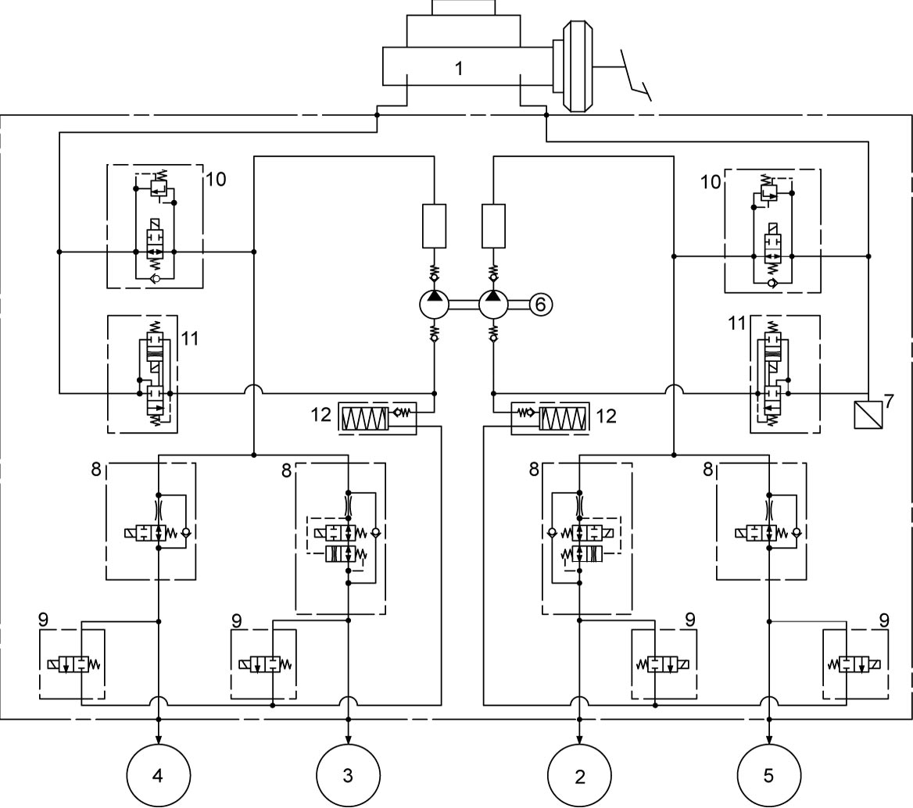

4F
| ESP® Component Description |
ESP® hydraulic unit / control module assembly is composed of the following components. Regarding location, refer to ESP® Component Location.
ESP® Hydraulic Unit / Control Module
The ESP® control module receives signals from each wheel speed sensor, ESP® OFF switch, brake master cylinder pressure sensor (7) and steering angle sensor. Based on these signals, the ESP® control module judges the vehicle conditions and controls the brake hydraulic pressure by combining the ON/OFF operation of the solenoid valves in the hydraulic unit and the pump motor operation.
The hydraulic unit contains an inlet solenoid valve (8) and an outlet solenoid valve (9) for each wheel as well as a cut solenoid valve (10) and a low pressure solenoid valve (11) for each hydraulic circuit. Also, a brake master cylinder pressure sensor, pump motor (6), etc. are included. The hydraulic pressure control is performed in 3 modes: pressure increase, pressure keeping and pressure reduction.
•Pump motor:
The pump motor turns on and applies pressure to each brake when braking is activated in the traction control and stability control state. In the pressure reduction mode, the pump motor returns the brake fluid in the reservoir (12) to the brake master cylinder (1).
•Brake master cylinder pressure sensor:
This sensor detects the brake hydraulic pressure in the primary piping when brakes are applied in the normal condition. Also, it detects the pump motor driving state when a brake is applied in the traction control and stability control state.
•Inlet solenoid valve:
When the ABS, traction control and stability control functions are working, this valve is activated in the pressure keeping and pressure reduction modes to close the fluid passage, thereby restricting increase of the hydraulic pressure applied to the brake caliper.
•Outlet solenoid valve:
When the ABS, traction control and stability control functions are working, this valve is activated in the pressure reduction mode to open the fluid passage, thereby lowering the hydraulic pressure in the brake caliper.
•Cut solenoid valve:
When brake application is commanded while the traction control and stability control functions are working, this valve is activated to close the fluid passage to apply the hydraulic pressure generated by the pump motor to the brake caliper.
•Low pressure solenoid valve:
When brake application is commanded while the traction control and stability control functions are working, this valve is activated to open the fluid passage from the master cylinder to the pump motor.
•Yaw rate / G sensor:
The yaw rate / G sensor incorporated in ESP® control module detects yaw rate and acceleration of gravity on the vehicle.
The pump motor turns on and applies pressure to each brake when braking is activated in the traction control and stability control state. In the pressure reduction mode, the pump motor returns the brake fluid in the reservoir (12) to the brake master cylinder (1).
•Brake master cylinder pressure sensor:
This sensor detects the brake hydraulic pressure in the primary piping when brakes are applied in the normal condition. Also, it detects the pump motor driving state when a brake is applied in the traction control and stability control state.
•Inlet solenoid valve:
When the ABS, traction control and stability control functions are working, this valve is activated in the pressure keeping and pressure reduction modes to close the fluid passage, thereby restricting increase of the hydraulic pressure applied to the brake caliper.
•Outlet solenoid valve:
When the ABS, traction control and stability control functions are working, this valve is activated in the pressure reduction mode to open the fluid passage, thereby lowering the hydraulic pressure in the brake caliper.
•Cut solenoid valve:
When brake application is commanded while the traction control and stability control functions are working, this valve is activated to close the fluid passage to apply the hydraulic pressure generated by the pump motor to the brake caliper.
•Low pressure solenoid valve:
When brake application is commanded while the traction control and stability control functions are working, this valve is activated to open the fluid passage from the master cylinder to the pump motor.
•Yaw rate / G sensor:
The yaw rate / G sensor incorporated in ESP® control module detects yaw rate and acceleration of gravity on the vehicle.

 "Expand image")
| 2. | Brake caliper (right-front) | 4. | Brake caliper (right-rear) |
| 3. | Brake caliper (left-front) | 5. | Brake caliper (left-rear) |
Steering Angle Sensor
The steering angle sensor is a unit including a contact coil and mounted to the steering column. Detecting the angle as the steering wheel is turned, it sends that information to the ESP® hydraulic unit / control module assembly.
ESP® OFF Switch
This switch is of a momentary contact type, and is located at the instrument panel. When the ESP® OFF switch is pressed, the ESP® hydraulic unit / control module assembly stops the traction control and stability control functions. The ESP® OFF light in the combination meter lights and informs driver that these functions are inactive. When the ESP® OFF switch is pressed again, the ESP® hydraulic unit / control module assembly resumes these functions.
Hill Descent Control Switch
This switch is located at the instrument panel. When hill descent control switch is pushed during driving mode switch is “LOCK” position and gear shift lever is other than neutral position, hill descent control indicator light in the combination meter comes on and the system becomes standby.
Wheel Speed Sensor
Refer to “Wheel speed sensor” under ABS Description.